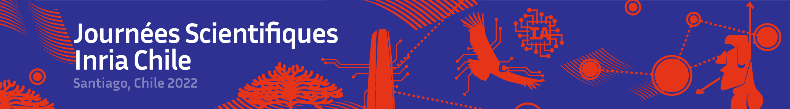

Chile Científico
Este año, el centro Inria Chile tiene el placer de organizar las Journées Scientifiques Inria 2022.
Este encuentro fue una oportunidad para presentar un panorama de los campos de investigación y aplicación desarrollados por los equipos de proyecto del instituto y tener momentos privilegiados de discusión sobre diversos temas que han marcado nuestra actualidad y/o que nos harán avanzar colectivamente.
En esta ocasión, debido a la actual pandemia, su formato final aún no ha sido decidido, pero esperamos con ansias la posibilidad de poder encontrarnos en persona.